O nama
Haus Majstor X-men pruža pouzdane i brze kućne popravke na području Kotora i Tivta. Vlasnik Branislav Marković ima dugogodišnje iskustvo u terenskom radu i pristupa svakom poslu profesionalno i odgovorno. Takođe ima dugogodišnje iskustvo u izradi unikatnog namještaja i suvenira od gvožđa.
Haus Majstor X-men provides reliable and fast home repairs in the area of Kotor and Tivat. The owner, Branislav Marković, has many years of experience in field work and approaches every job professionally and responsibly. He also has many years of experience in making unique furniture and iron souvenirs.
Haus Majstor X-men предоставляет надежные и быстрые услуги по ремонту домов в районах Котора и Тивата. Владелец, Бранислав Маркович, имеет многолетний опыт работы на объектах и подходит к каждой задаче профессионально и ответственно. Он также обладает многолетним опытом изготовления уникальной мебели и сувениров из железа.
Slike
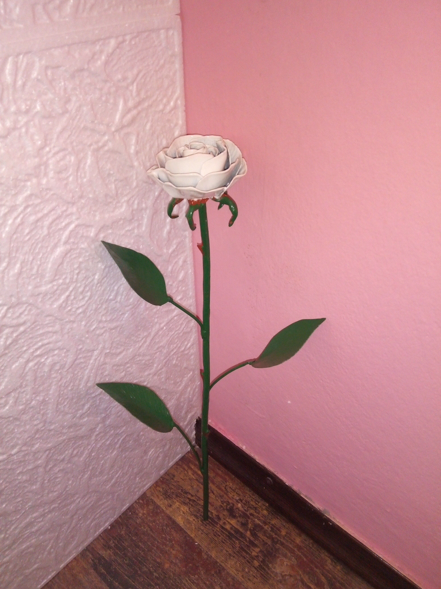
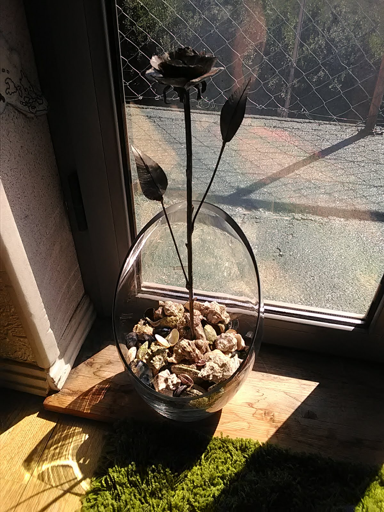
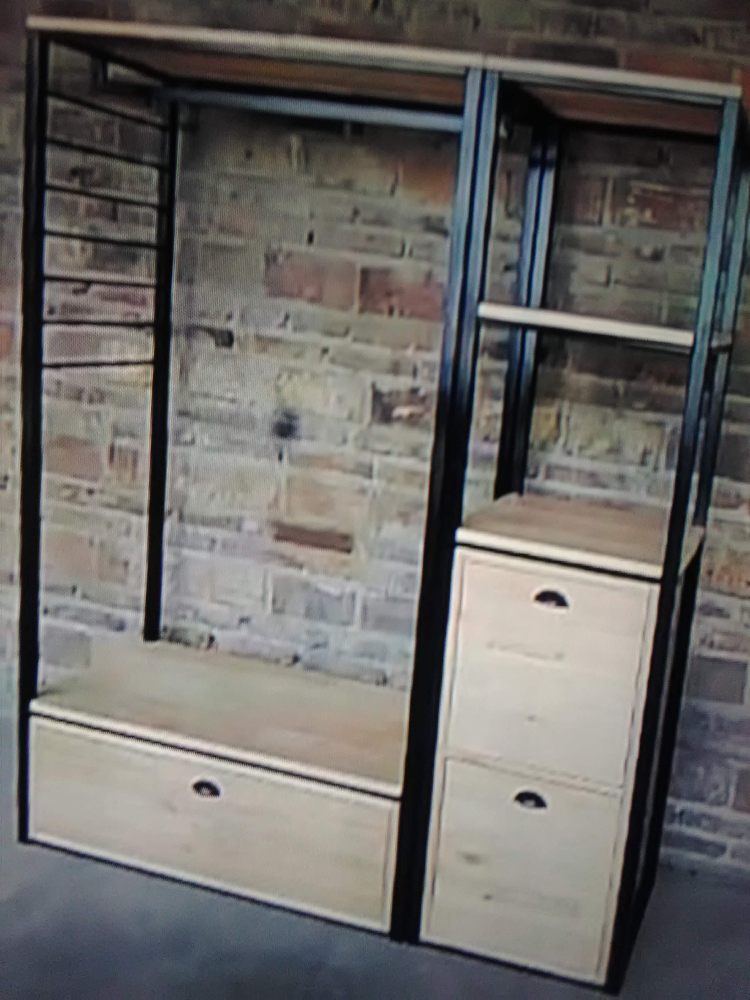
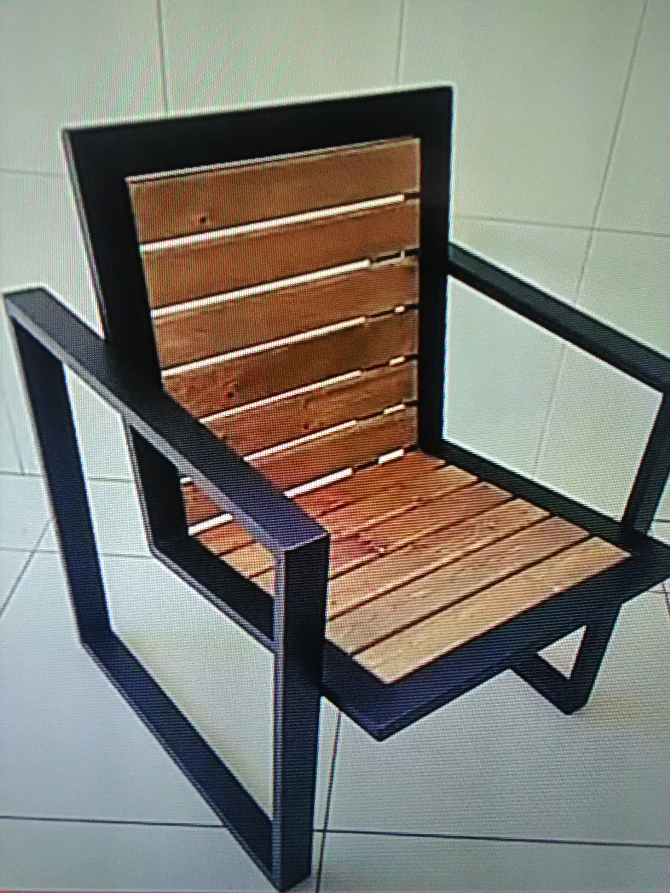
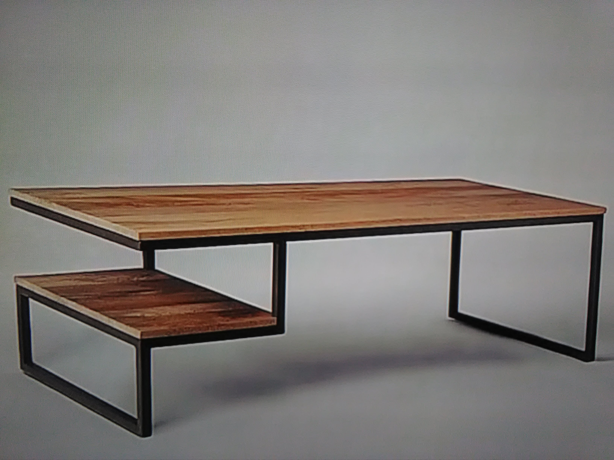
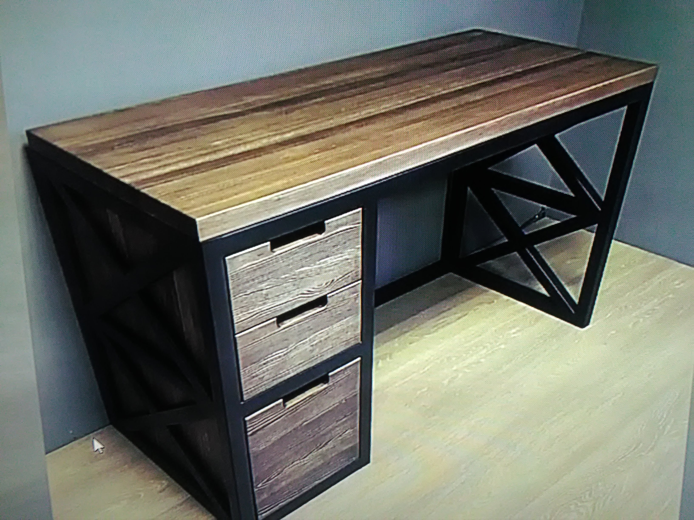
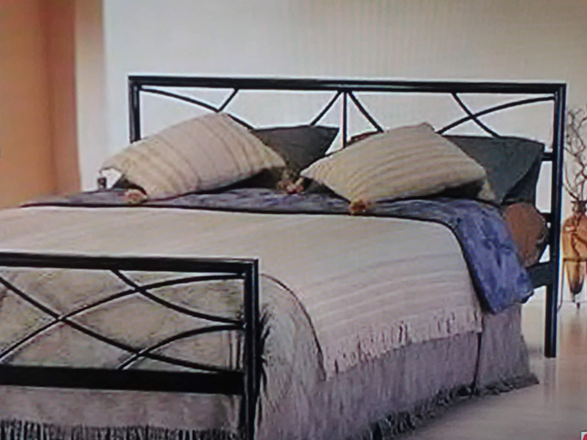
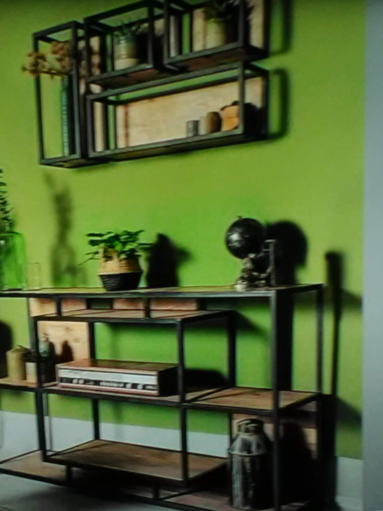
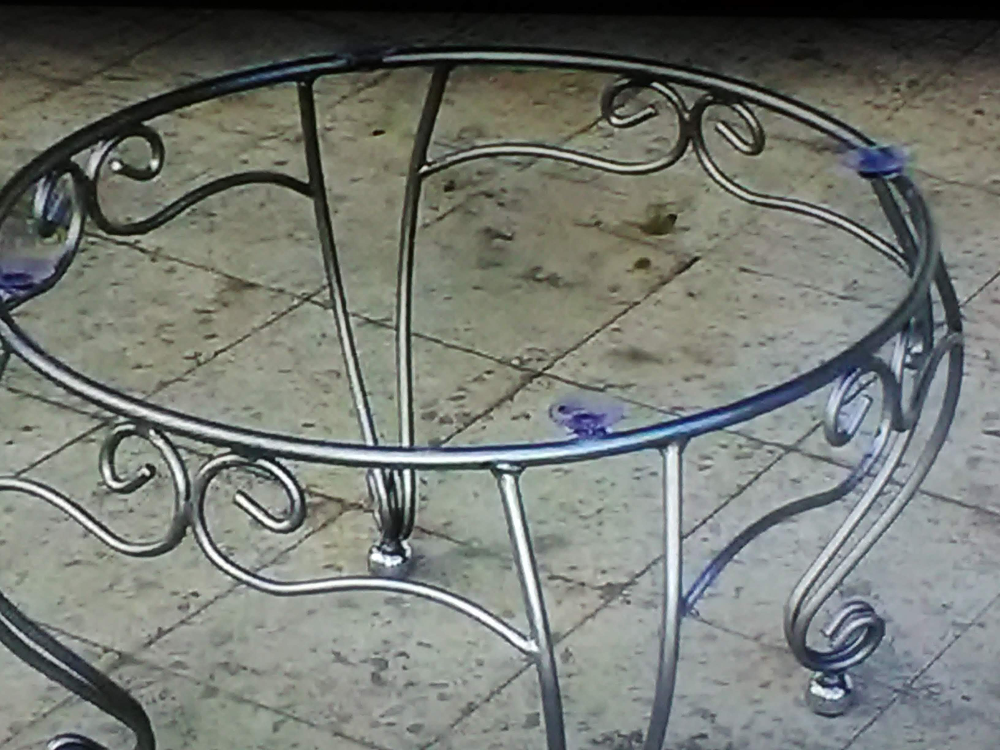
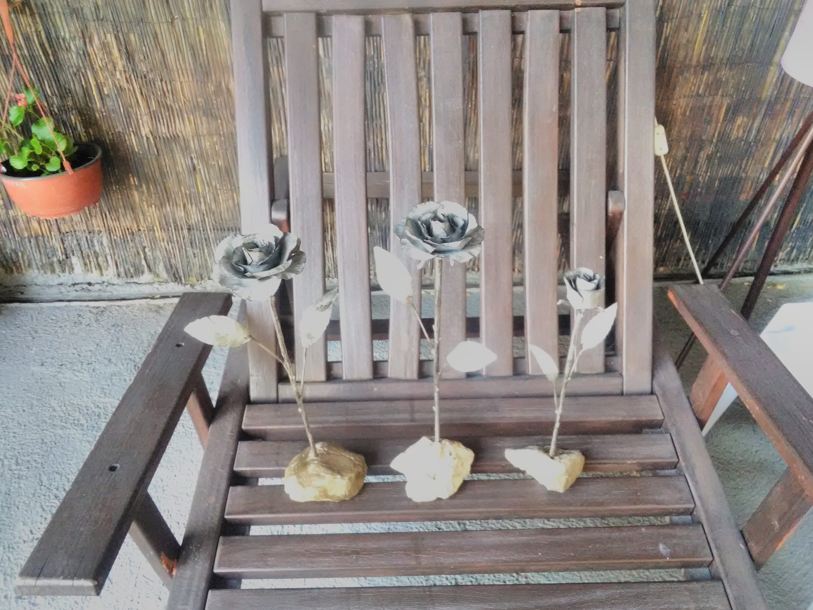
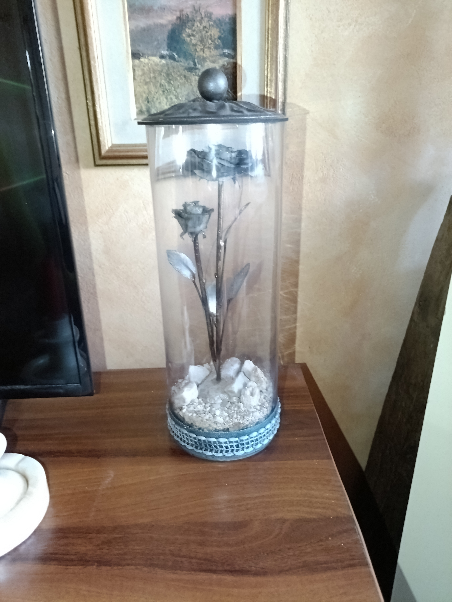
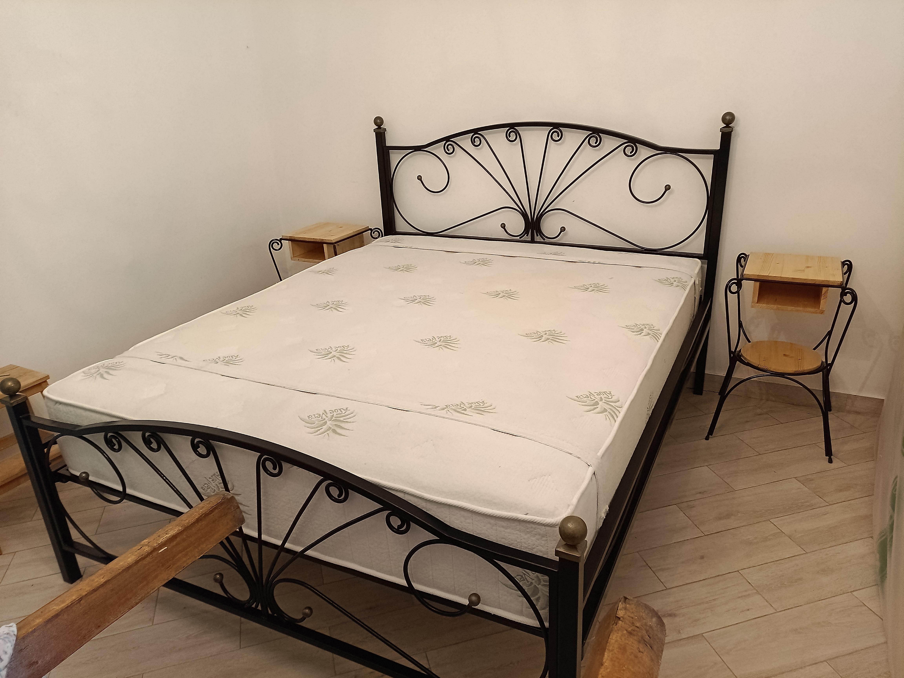

Usluge – Kupatilo
- 🚿Zamjena lavabo baterije
- 🚿Zamjena tuš baterije
- 🚽Zamjena zidnog vodokotlića
- 🚽Zamjena integrisanog vodokotlića sa šoljom
- 🚽Zamjena WC šolje
- 🛁Zamjena lavaboa
- 🛁Zamjena bojlera
- 🛁Ugradnja grijalice za kupatilo
- 🔧Priključak i zamjena veš mašine
- 🔧Zamjena ventila vodokotlića i veš mašine
- 🔧Zamjena odvodnog crijeva i sifona (lavabo)
- 🪞Montaža ogledala i polica u kupatilu
Usluge – Kuhinja
- 🎛️Ugradnja ugradne pećnice
- 🔧Ugradnja ravne ploče
- 🔧Montaža aspiratora
- 🚰Zamjena sudopere
- 🔧Zamjena ventila mašine za suđe
- 🔧Zamjena sifona sudopere
- 🍽️Priključak i zamjena mašine za suđe
- ❄️Čišćenje filtera klime
Ostale usluge
- 🔌Zamjena utikača
- 💡Zamjena prekidača
- 💡Montaža lustera
- 📬Montaža poštanskog sandučeta
- 🔐Zamjena cilindra brave
- 🔐Zamjena komplet brave
- 📚Montaža jednostavnih polica
- 🖼️Postavljanje slika
- 🪟Montaža garnišni
- 📚Montaža polica za knjige